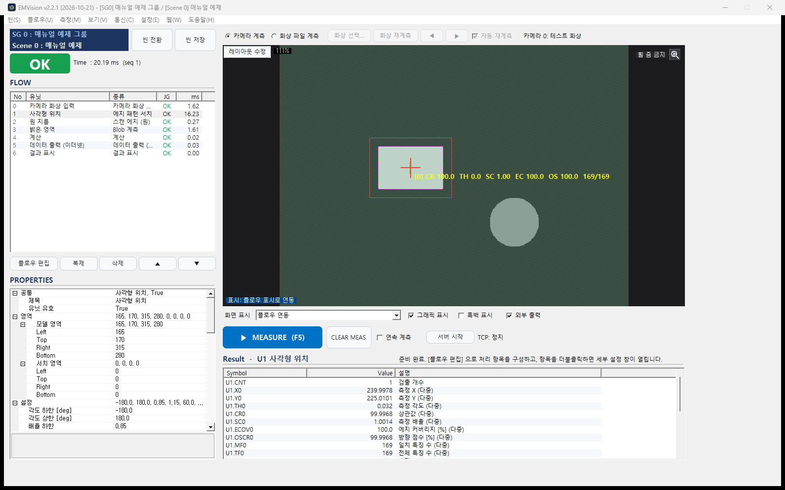
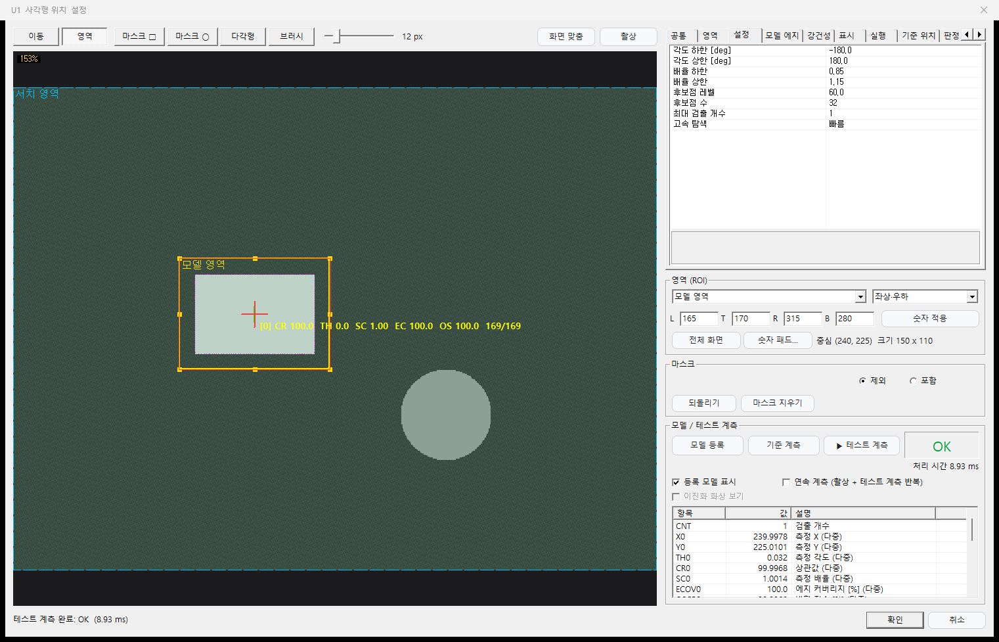
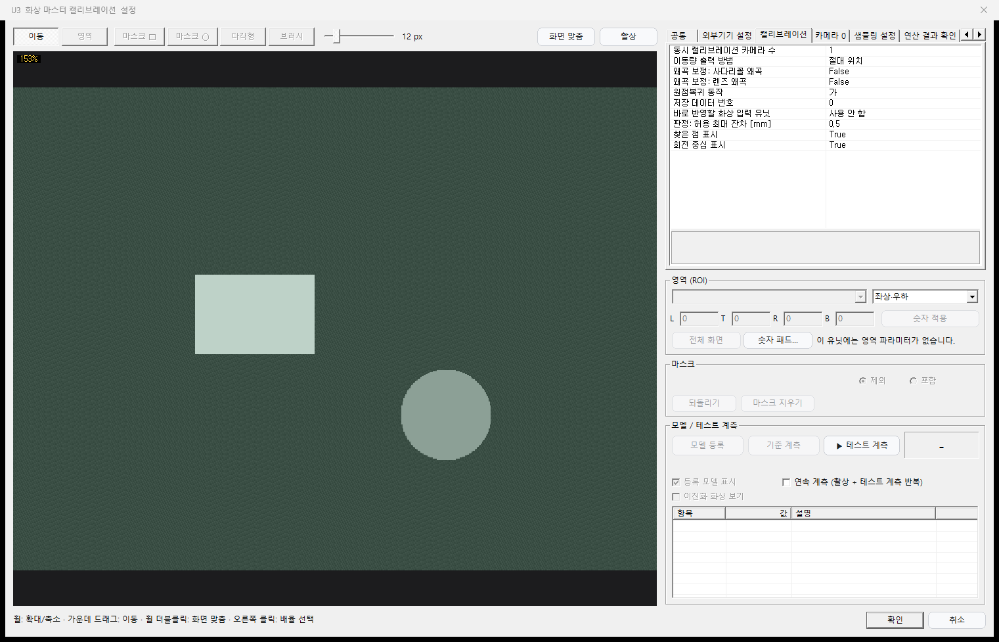
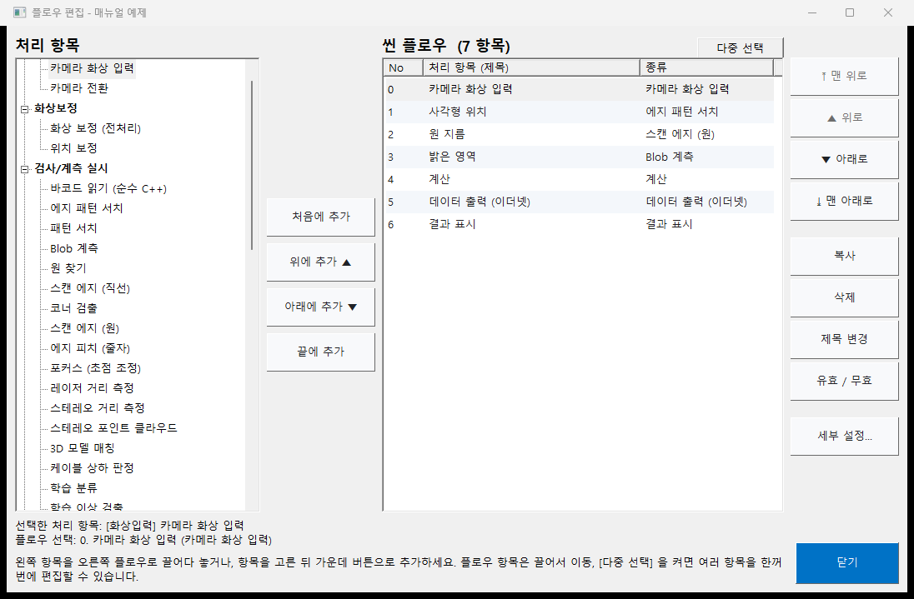
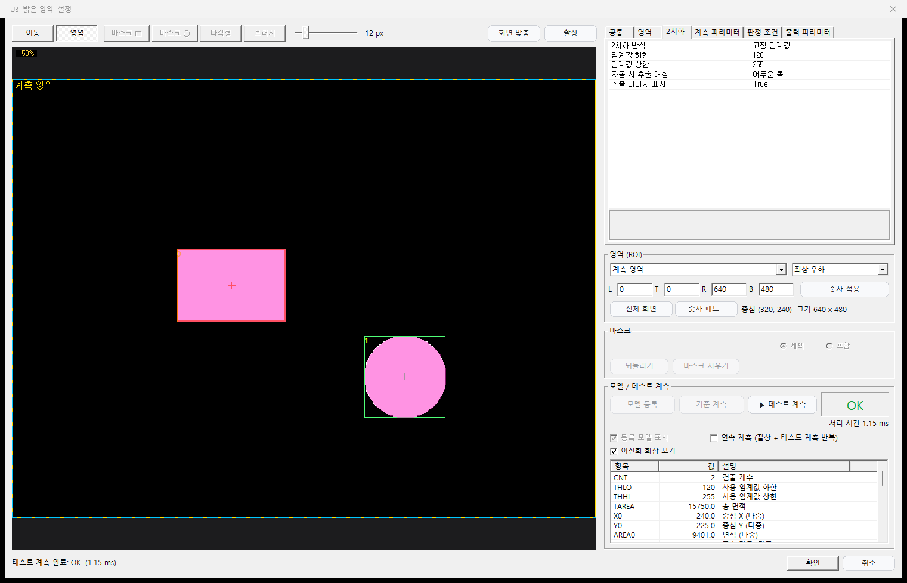
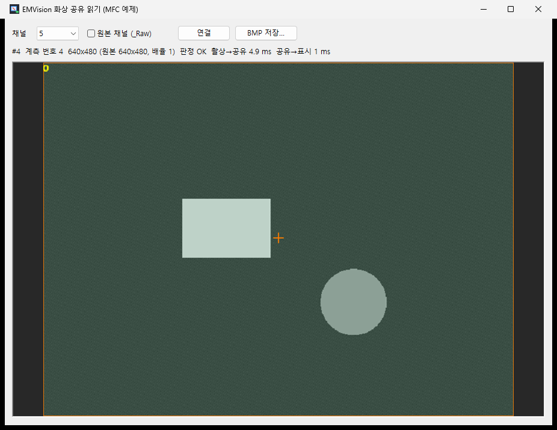
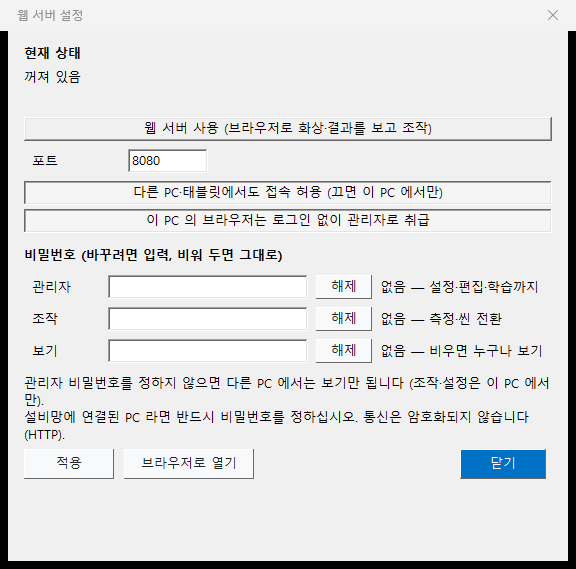

학습 검사
분류, 표면 결함, 문자 읽기, 물체 검출. 외부 딥러닝 라이브러리 없이 수십 장으로 학습하고, 교차검증으로 검출률을 숫자로 확인한 뒤 라인에 넣습니다.
NG · 2
촬상, 위치 찾기, 치수, 판정, 출력. 처리 항목을 순서대로 쌓으면 그것이 곧 검사입니다. 코드 한 줄 없이 라인을 구성하고, 필요하면 TCP · EtherNet/IP · 웹 API로 무엇이든 제어합니다.

에지 패턴 매칭
피라미드 탐색과 AVX2 · NEON 벡터 연산, 멀티스레드. 회전과 배율을 함께 훑고 ICP로 서브픽셀까지 다듬습니다. 화면을 드래그해 부품을 옮겨 보세요.
하나의 툴, 모든 공정
분류, 표면 결함, 문자 읽기, 물체 검출. 외부 딥러닝 라이브러리 없이 수십 장으로 학습하고, 교차검증으로 검출률을 숫자로 확인한 뒤 라인에 넣습니다.
화상 마스터 · PLC 마스터 · 차트 캘리브레이션. 카메라 여러 대를 한 번에 같은 로봇 좌표계로 맞추고, 렌즈 왜곡과 사다리꼴까지 보정합니다.
무순서 TCP(서버·클라이언트), EtherNet/IP 암시적 I/O, 공유 메모리 화상 공유, 웹 API. PLC와 로봇이 바로 읽는 형식 그대로.
스테레오 포인트 클라우드 위에 STL · OBJ · PLY 모델을 맞춰 6축 자세를 냅니다. 드래그해서 돌려 보세요.
컨베이어 위 물체에 ID를 붙이고 속도 · 예측 위치 · 게이트 통과를 셉니다. 검출기를 바꿔도 추적은 그대로.
설치 없이 브라우저로 화상 · 결과 · 플로우 · 학습을 보고 조작합니다. 역할별 비밀번호와 같은 기기 키오스크 모드.
스캔 에지 직선 · 원, 코너, 에지 피치, Blob 라벨링 34종 특징량. 캘리브레이션을 걸면 그대로 mm.
논스톱 조정 모드는 라인이 계측하는 바로 그 화상으로 사본 씬을 다시 돌립니다. 설정을 다듬는 동안에도 판정은 계속 나갑니다. 확정하면 다음 계측부터 반영.
01 촬상
동시 촬상은 카메라 사이 시점 차를 0.1 ms 수준으로 줄입니다. 움직이는 자재도 같은 순간을 봅니다.
02 위치
에지 패턴 매칭이 위치 · 각도 · 배율을 찾고, 뒤 유닛의 영역이 그 자세를 따라갑니다.
03 측정
스캔 에지, 원, 코너, Blob 34종 특징량. 캘리브레이션을 걸면 결과가 곧 mm 입니다.
04 판정 · 출력
식으로 판정하고 TCP · EtherNet/IP · 공유 메모리로 내보냅니다. 촬상이 끝나는 즉시 OK 를 돌려 줘 라인이 기다리지 않습니다.
화면






제품군
모든 플랫폼이 같은 C++17 비전 코어를 씁니다. 씬 파일 하나가 PC 에서도, 라즈베리파이에서도 같은 판정을 냅니다.
데스크톱 설정 · 운용. USB · Basler 카메라 8대, 트레이 · 숨김 실행, 학습 화면, 3D 뷰어.
다운로드 제공라즈베리파이 · 리눅스 헤드리스. 화면은 키오스크 브라우저나 원격 브라우저. Pi Zero 2 W 까지 고려한 메모리 설계.
Linux x86_64 제공 · ARM 문의안드로이드 폰 카메라로 같은 검사를. 앱 안에서 헤드리스 런타임이 돌고 화면은 웹 UI 그대로.
문의공유 메모리 화상 읽기(C++ · C#), MFC 예제, 웹 API 문서. 설비 프로그램에 검사 화면을 바로 붙입니다.
배포본에 포함다운로드
설치 후 기기 정보 파일을 보내 주시면 인증 파일을 발급해 드립니다. 인증 전에도 계측은 동작하며, 씬 편집 · 저장은 인증 후 열립니다.
Windows 10/11 x64 · Visual C++ x64 런타임 · Linux x86_64 (libfreetype6, fonts-noto-cjk)